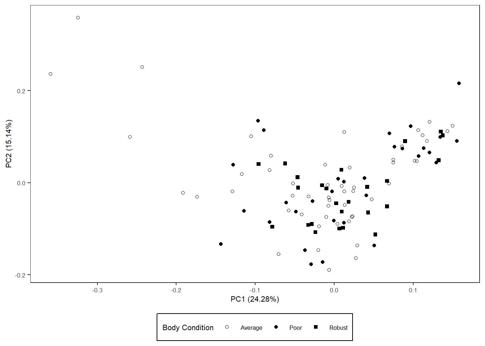
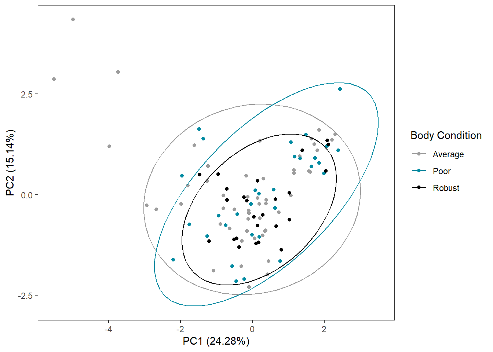
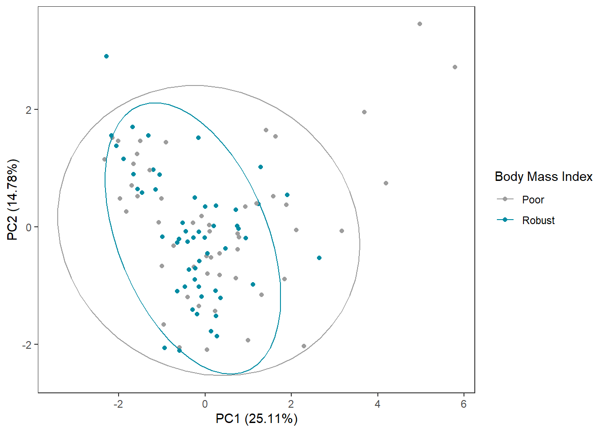
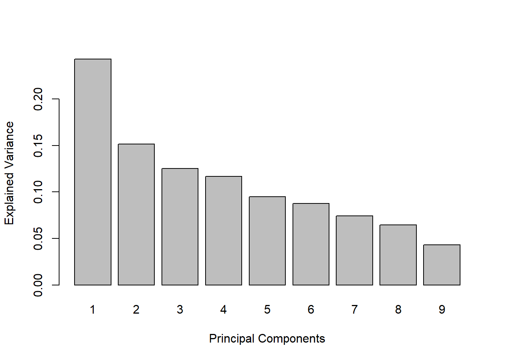
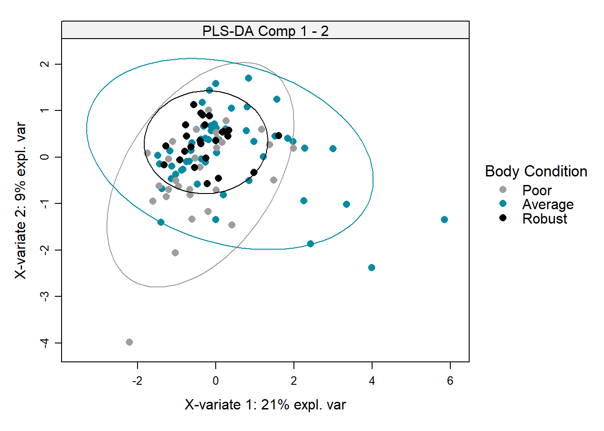
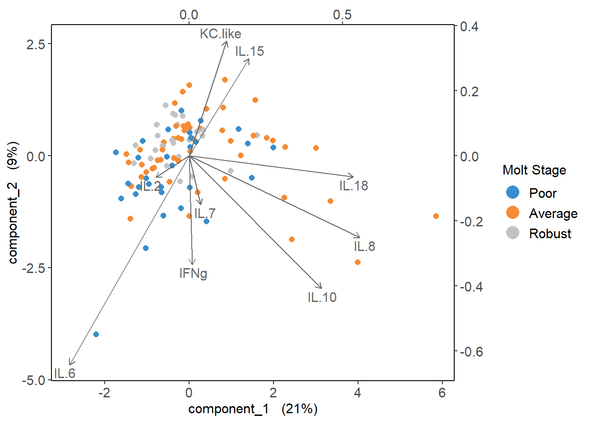
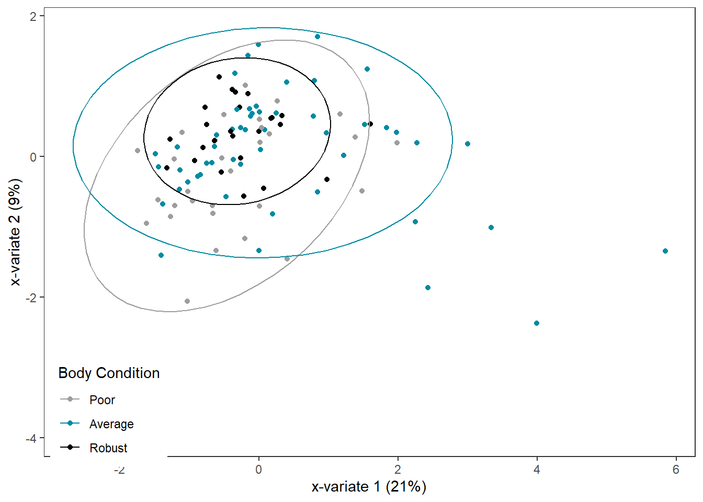

Chapter 4 Multivariate Cytokine ~ Body Condition Stats
4.2 Read in data
cyto <- read.csv("Output Files/cleaned_cytokine.csv")
meta <- read.csv("Output Files/metadata_cyto.csv")
mindc <- read.csv("Input Files/mindc.csv") %>%
mutate(half=value/2)
# Merge cytokine & metadata
data <- merge(cyto, meta, by="Sample")
# Tidy data, remove cytokines with < 10% (11) detections, remove pups with NA bc
data_tidy <-
data %>%
select(2:14) %>%
select_if(function(x) sum(x>0) > 11) %>%
mutate(bc=data$bc_bin,
sample=data$Sample) %>%
filter(!is.na(bc))4.3 PCA on log-transformed, scaled, centered cytokine data
# Make all non-detects half the limit of detection
data_half <- data_tidy
for (i in 1:nrow(data_half)) {
for (j in 1:9) {
{if (data_half[i,j]==0) {
k <- which(mindc==colnames(data_half)[j])
data_half[i,j] <- mindc[k,3]
}
else{next}
}
}
}
# Log transform, scale, and center data
data_log <-
data_half %>%
mutate_at(1:9, log)
data_scaled <-
data_half %>%
mutate_at(1:9, log) %>%
mutate_at(1:9, function(x) scale(x, center=TRUE, scale=TRUE))
# Molt Stage
PCA_scaled_bc <- prcomp(data_scaled[,1:9], center=FALSE, scale=FALSE)
autoplot(PCA_scaled_bc, data=data_scaled, shape="bc") +
scale_shape_manual(values=c(1,19,15), name="Body Condition") +
theme_bw() +
theme(panel.grid=element_blank(), text=element_text(size=8),
legend.background=element_rect(size=0.5, linetype="solid", colour ="black"),
legend.position="bottom")
PCA_scaled_bc_df <- data.frame(x=PCA_scaled_bc$x[,1],
y=PCA_scaled_bc$x[,2],
bc=data_scaled$bc)
PCA_scaled_bc_ggplot <-
ggplot(PCA_scaled_bc_df,
aes(x=x,
y=y,
col=bc)) +
geom_point() +
stat_ellipse() +
labs(x="PC1 (24.28%)",
y = "PC2 (15.14%)",
name="Body Condition") +
scale_color_manual("Body Condition",
values=c("#9d9d9d","#008ba2", "#000000")) +
theme_bw() +
theme(panel.grid=element_blank(),
legend.position.inside=c(0.1, 0.1))
PCA_scaled_bc_ggplot
4.4 Test for normality
# Create dataframe for results
norm_results <- data.frame(matrix(ncol=0, nrow=9)) %>%
mutate(cyto=colnames(data_scaled)[1:9],
W=NA,
pvalue=NA)
# Truncate data
data_norm <-
data_scaled[,1:9]
# Test!
for (i in 1:9) {
test <- shapiro.test(data_norm[,i])
norm_results[i,2] <- round(test$statistic, digits=3)
norm_results[i,3] <- test$p.value
}
norm_results # all not normally distributed## cyto W pvalue
## 1 IFNg 0.912 2.481609e-06
## 2 IL.2 0.837 1.515295e-09
## 3 IL.6 0.609 1.604288e-15
## 4 IL.7 0.893 2.956850e-07
## 5 IL.8 0.364 1.504217e-19
## 6 IL.10 0.604 1.281636e-15
## 7 IL.15 0.392 3.806464e-19
## 8 IL.18 0.973 2.627437e-02
## 9 KC.like 0.549 1.205277e-164.5 Cramer Test
Multivariate composition of the cytokine pattern between each molt stage pairwise comparison It can handle multiple variables, potentially complex interactions and correlations.
# Separate data by molt stage
poor <-
data_scaled %>%
filter(bc=="Poor") %>%
select(1:9) %>%
data.matrix()
average <-
data_scaled %>%
filter(bc=="Average") %>%
select(1:9) %>%
data.matrix()
robust <-
data_scaled %>%
filter(bc=="Robust") %>%
select(1:9) %>%
data.matrix()
# Run Cramer Tests!
cramer.test(poor, average)##
## 9 -dimensional nonparametric Cramer-Test with kernel phiCramer
## (on equality of two distributions)
##
## x-sample: 31 values y-sample: 52 values
##
## critical value for confidence level 95 % : 3.339115
## observed statistic 1.983639 , so that
## hypothesis ("x is distributed as y") is ACCEPTED .
## estimated p-value = 0.4765235
##
## [result based on 1000 ordinary bootstrap-replicates]##
## 9 -dimensional nonparametric Cramer-Test with kernel phiCramer
## (on equality of two distributions)
##
## x-sample: 52 values y-sample: 25 values
##
## critical value for confidence level 95 % : 3.221589
## observed statistic 1.932513 , so that
## hypothesis ("x is distributed as y") is ACCEPTED .
## estimated p-value = 0.4195804
##
## [result based on 1000 ordinary bootstrap-replicates]##
## 9 -dimensional nonparametric Cramer-Test with kernel phiCramer
## (on equality of two distributions)
##
## x-sample: 31 values y-sample: 25 values
##
## critical value for confidence level 95 % : 3.167981
## observed statistic 2.091366 , so that
## hypothesis ("x is distributed as y") is ACCEPTED .
## estimated p-value = 0.3076923
##
## [result based on 1000 ordinary bootstrap-replicates]4.6 Cytokine Importance
Not doing because no sig difference among body condition groups.
4.7 How different groups are
4.7.1 PLSDA
pls_x <-
data_cart[,1:9]
pls_y <-
data_cart %>%
select(bc)
# PCA Model (to compare)
pca <- pca(pls_x,
ncomp=9,
center=FALSE,
scale=FALSE)
plotIndiv(pca,
group=pls_y$bc,
ind.names=FALSE,
ellipse=TRUE,
legend=TRUE,
legend.title="Body Condition",
title="PCA")

# PLSDA Model
plsda_model <- mixOmics::plsda(pls_x,
pls_y$bc,
scale=FALSE,
ncomp=9)
plotIndiv(plsda_model,
ellipse=TRUE,
ind.names=FALSE,
col.per.group=c("#9d9d9d","#008ba2", "black"),
pch=16,
legend=TRUE,
legend.title="Body Condition",
style="lattice",
title="PLS-DA Comp 1 - 2")
## Warning in biplot.mixo_pls(plsda_model, ind.names = FALSE, legend.title = "Molt
## Stage"): The 'tune.spca' algorithm has used scale=FALSE. We recommend scaling
## the data to improve orthogonality in the sparse components.
# ggplot2
plsda_ggplot <-
data.frame(x = plsda_model$variates$X[,1],
y = plsda_model$variates$X[,2],
bc = plsda_model$Y)
bc_plsda_ggplot <-
ggplot(plsda_ggplot,
aes(x=x,
y=y,
col=bc)) +
geom_point() +
stat_ellipse() +
labs(x="x-variate 1 (21%)",
y = "x-variate 2 (9%)",
name="Body Condition") +
scale_color_manual("Body Condition",
values=c("#9d9d9d","#008ba2", "black")) +
theme_bw() +
theme(panel.grid=element_blank(),
legend.position=c(0.1, 0.1))
bc_plsda_ggplot